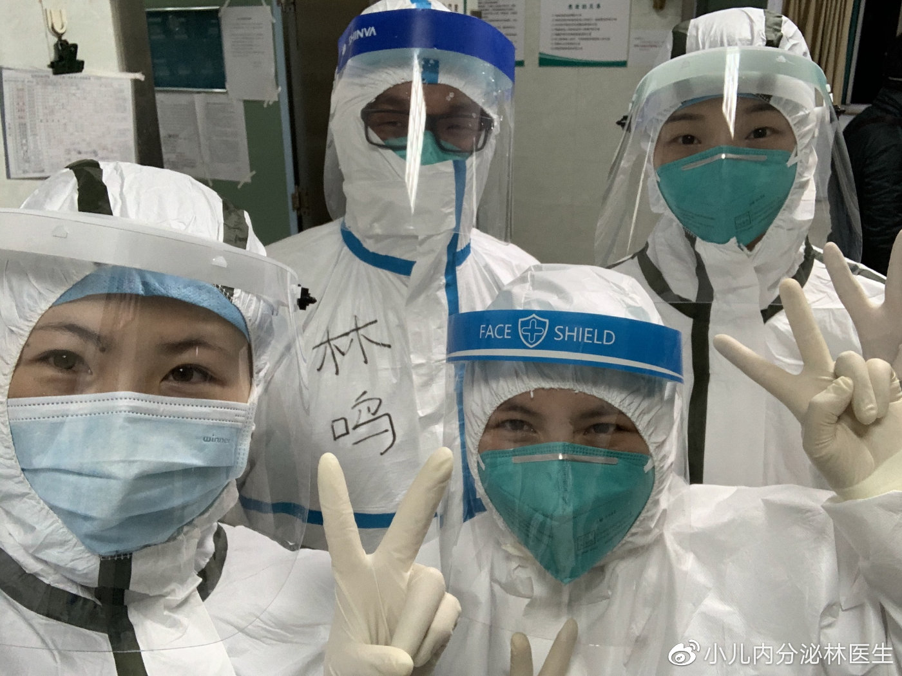
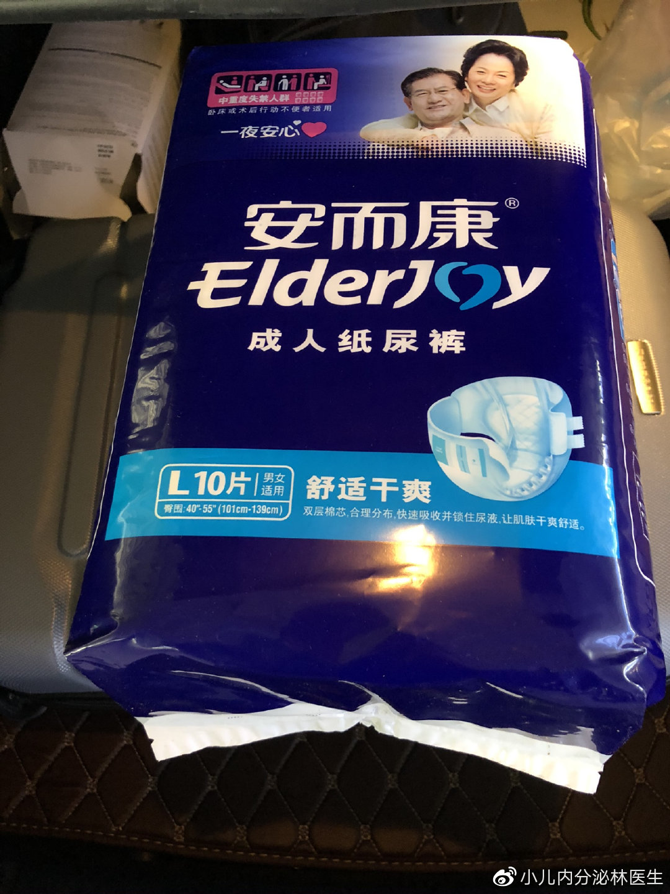
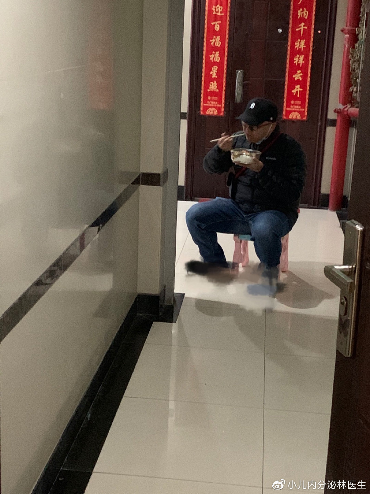
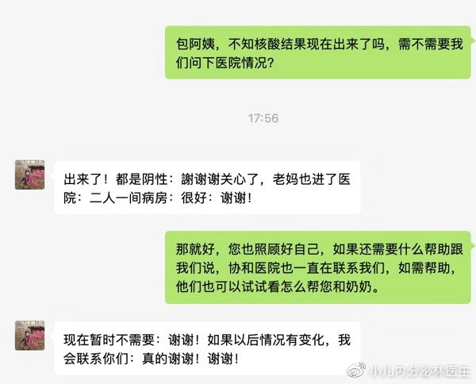

![]()
广东前置防疫关口 发热门诊患者核酸检查“一个不漏”
原文链接 备份链接 【财新网】（记者 黄姝伦 方祖望）在广东，只要踏进发热门诊的大门，就要接受核酸检测，排查是否感染了新冠肺炎。2月12日，广东省疫情发布会上，省卫健委副主任陈祝生称，全省发热门诊启动患者核酸检测排查，范围扩大至全员。 …
.

一名儿科医生的特殊“抗疫”征程
阅读数：40万+
.
作为一名儿科医生，能投入到这场没有硝烟的战争中，我深表荣幸
从2020年1月开始，我就被调至位于沌口开发区的武汉协和医院西院儿科急诊工作，由于之前11-12月爆发的流感，每天前来就诊的患儿还是很多。但随着新冠肺炎疫情逐渐加重，从1月中旬开始，家长就尽量避免带孩子来医院，即使来了也是匆忙开些常用口服药就回家。
1月25日17：00我们医院正式被征召为新冠肺炎治疗的定点医院，所有的医护人员的工作都是救治新冠肺炎病人，而我作为一名儿科医生，也第一时间被征兆去成人发热门诊工作。

收到这个消息意外也不意外，意外的原因是我是一名儿科医生，执业范围是儿科，从理论上说是不能在成人门诊工作的，但特殊时期特事特办也能理解；说不意外是因为自从这次冠状病毒肺炎爆发以来，看着身边的同事纷纷去发热门诊支援，心中一直无法平静，同样也想积极参与到这场战斗中，所以接到通知也算是如愿以偿。
将这个通知告诉家人以后，他们也表示了担忧，同时也问我怕不怕，我说：“说不怕是假的，毕竟今年的冠状病毒传播速度比往年的SARS还要迅猛，身边的医务人员也有不少被感染，但作为一名医生，治病救人是本职工作，就像上战场一样，士兵是没有退缩一说的。”尽管嘴巴上说的义无反顾，但内心还是存在一些愧疚，毕竟儿子年龄还小，家里父母年事已高，除了医生的身份外，还背负着儿子，丈夫，父亲这三重身份。
命令就是使命，大年初三，我第一次进入了发热门诊的阵地，第一次穿上了密不透风的防护服和护目镜等防护用品（甚至还第一次穿上了纸尿裤）。但初来乍到的兴奋感瞬间就被工作的紧张感所淹没，因为防护用品比较厚，而前来就诊的以老年人居多，有时候还要大声喊着询问病史。所幸前来就诊的患者以轻症居多，所以在治疗的同时，我更多的在扮演心理医生的角色，给他们进行心理疏导。


由于在发热门诊工作，还是担心自己会有被感染的风险，就主动跟家人隔离开，到了饭点的时候就去家里楼下等家人送饭下来，顺便在楼下跟老婆孩子打个招呼，天气不好的时候就在楼道里吃完。


在大年初九的夜班，我遇到了让无数网友泪奔的徐美武奶奶（又名徐梦我），90岁的高龄仍然陪64岁的儿子来医院就诊，等待4天4夜终于将儿子安顿住院，凌晨2点独自一人过来找我做体检。给儿子的留言至今让人泪目：儿子，要挺住，要坚强，战胜病魔….真情流露于笔尖，结字端庄，让人真切体会到女子本弱，为母则刚。万幸的是徐奶奶CT检查结果正常，后续联系社区检查核酸也是阴性。在这里也要感谢众多媒体人，社区工作人员以及广大热心网友的关心和照料。



随着火神山医院的建成，我被调到急诊120中心，负责将各个医院的新冠肺炎患者转移过去，之前都只是在新闻媒体中见到过火神山医院，能亲自参与到其中的工作也是十分激动。尽管跟确诊的患者相处在密闭的救护车里内心难免有些紧张，但看到火神山一片井然有序的样子，还是非常的欣慰和自豪。


今天已经是我在一线的第26天，任务仍在继续，但看到每日通报的新增病例数较前大幅下降，出院人数稳步上升，就觉得我们再辛苦也是值得的。昨天从科室同事那里得知，我们协和西院发热门诊迄今为止没有一例医护人员感染新冠病毒，真的是一件非常值得骄傲的事情！我们会将这个记录一直保持到战役结束那一天的！武汉加油！
.
宽城区医院里有一排白色的彩钢平房，如果不是“发热门诊”四个大字，很难有人把它和新冠肺炎疫情联想在一起，在这里，一场艰难的疫情阻击战正在悄然进行。 平凡的岗位，不平凡的坚守。如果说医院是这次疫情的战场，那么发热门诊就是这场战役中的前沿阵地。面对疫情，发热门诊的医护人员们义无反顾地投入到战斗中，没有退缩，没有抱怨。 按照流程，患者需要先到门诊预检分诊处，经过登记、询问流行病史、测温，一旦发现存在发热或有疑似接触史等患者，就立即送到发热门诊进行筛查诊断。发热门诊即是发热患者就医的第一岗。
.
深圳各大医院的发热门诊和隔离留观区，很多一线医护人员坚守岗位。在北京大学深圳医院，有这样一群医护人员，她们用文字记录下经历的点点滴滴。 门诊预检分诊 发热门诊的第一道防线 记录人：北大医院急诊科张佳佳 时间：1月26日，年初二 地点：发热门诊 日记内容： 以往的春节期间，急诊是人声鼎沸的。今年因为新冠肺炎疫情，曾经人潮涌动的莲花山公园空无一人，以往车水马龙的街道空空荡荡…… 但是，在春节前及年初二前院内发热门诊全天24小时值班之前，在急诊科就诊人数仍居高不下，高位时有74名患者候诊。
.
广东省人民医院珠海医院（珠海金湾中心医院）是金湾区发热门诊的重点医院从1月18日发热门诊启动运行以来这里的医护人员已经接诊超过600名发热病人…… 他们每天需要从众多发热病例中筛查出新冠肺炎疑似患者而这个时候病毒有可能正向每一位医护人员“招手”无声的战役在这里打响但他们奋战的背影中也让医者仁心在这里成为真实写照 田燕雏：曾在非典“火线”上战斗 用敏锐触觉排查疑似患者 （田燕雏在查看疑似患者的CT▲） 省医珠海医院副院长田燕雏是一位曾经参与抗击非典战役的专家。正是因为这样特殊的经历，让他对突发新型传染病格外敏感。
.
疫情当下，妇儿医院发热门诊已然成为直面危险的最前沿，这里是门诊，也是战场。每天，她们需要全副武装，24小时不间断守候在诊室，为发热患者检查诊断。面对高风险，他们浑然不怕，枕戈待旦，迎接挑战，他们就是发热门诊的护理人员。 为了控制疫情传播，根据医院防控的安排，体检科被征用为发热筛查门诊，为缓解发热门诊的工作压力，医院从其他科室抽调11名支援一线。自发热门诊成立起来了，陈敏临危受命，成为了发热门诊的护士长。 在这支队伍中，姐妹们年龄层次不齐，有70、80后的，也90后，为了实现共同的目标，护士姐妹重新组建了护理组，它有了一个响亮的名字——“发热筛查门诊护理组”。
.

“嘿，亲爱的护士长，记得我刚刚学过的一句诗吗？‘山气日夕佳，飞鸟相与还’，连飞鸟都知道回家了，您却每天早出晚归……亲爱的妈妈，您，就是我心中的超级英雄！……我爱你！”1月28日中午，接到13岁的女儿发来的短信，贾玉枝眼圈红了。 懂事的女儿给妈妈发来暖心短信 看到女儿发来的短信，贾玉枝的眼圈红了 41岁的贾玉枝是洛阳市中心医院感染科护士长，11年的护士长生涯，有许多难忘的人和事，这个春节，对于她来说，尤其难忘！
.
.
快速开通微博你可以查看更多内容，还可以评论、转发微博。
.
.
原文链接 备份链接 【财新网】（记者 黄姝伦 方祖望）在广东，只要踏进发热门诊的大门，就要接受核酸检测，排查是否感染了新冠肺炎。2月12日，广东省疫情发布会上，省卫健委副主任陈祝生称，全省发热门诊启动患者核酸检测排查，范围扩大至全员。 …
原文链接 备份链接 【财新网】（记者 丁捷 综合）大批从事重症医学的医护人员奔赴一线。据国家卫健委，截至2月7日，建立了16个省份支援武汉以外地市的一一对口支援关系，以一省份包一市的方式，全力支持湖北省加强病人的救治工作。驰援武汉的医护 …
原文链接 备份链接 图片来源：视觉中国 记者：赵孟 “ 作为一名专业医生，又是感染者，王广发说，希望自己的观察和思考，能为疫情防控工作提供有益的借鉴。 ” 事后回忆，王广发一直觉得自己感染新冠肺炎“很奇怪”。 2020年1月8日，王广发作 …
原文链接 备份链接 医院呼吁，并不危急的其他疾病患者，可以通过线上咨询、问诊，暂缓前往医院；但该看的病还是要去医院看，千万不要耽误治疗。 记者 | 周 洁 新冠肺炎疫情期间，其他疾病的病人怎么看病？记者连线上海各大医院发现，恢复门诊近一个 …
原文链接 备份链接 从2月7日到现在，一方面大家的活动越来越丰富，另一方面由于轻症患者比较多，人们病情都慢慢恢复。所以，我看到每个人脸上的笑容都变多了。 口述 | 余 毅 整理 | 王仲昀 这一个月终于要过去了。 2月21日上午，在等待几 …